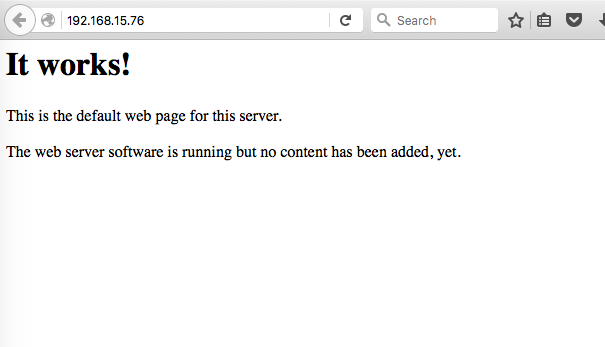
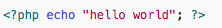
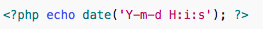

This quick tutorial assumes that you are familiar with setting up a Raspberry Pi. If not, the following sites are very helpful:
Once you have set up your Pi, you are ready to use it for serving out webpages.
To set up Apache on a Pi, follow the instructions below:
apache2 package by typing the following into the Terminal:
sudo apt-get install apache2 -y
ls /var/www
This should return index.html.
If you are using another computer to test whether Apache is working on your Pi, you can simply type in the Pi's IP address.
To find out the IP address, type: hostname -I at the command line. Type the IP address that is returned in a browser and you should get:

The gods of geekdom are looking favourably upon you - Apache is working! (snoopy dance optional)
/var/www/index.html. Enter ls -l /var/www/index.html to look at the permissions on the file.
root. For a definition of what this means, look here .
Normally we would change this so the file is not owned by root (so you can edit it directly) - but that's for another day. For now, we'll leave it as it is.
sudo apt-get install php5 libapache2-mod-php5 -y
Now remove the index.html file by navigating to the directory where index.html is stored and typing:
sudo rm index.html
and create the file index.php:
sudo nano index.php
and put some PHP content in it (NB: nano is a file editor):

Now save and refresh your browser. You should see "hello world". This is not dynamic but still served by PHP. Try something dynamic:

or show your PHP info:
This PHP part was adapted from here
You are now ready to serve your pages out after copying them to the Pi using Filezilla or FTP! However, before you do that, its worth reading the following pages very closely.